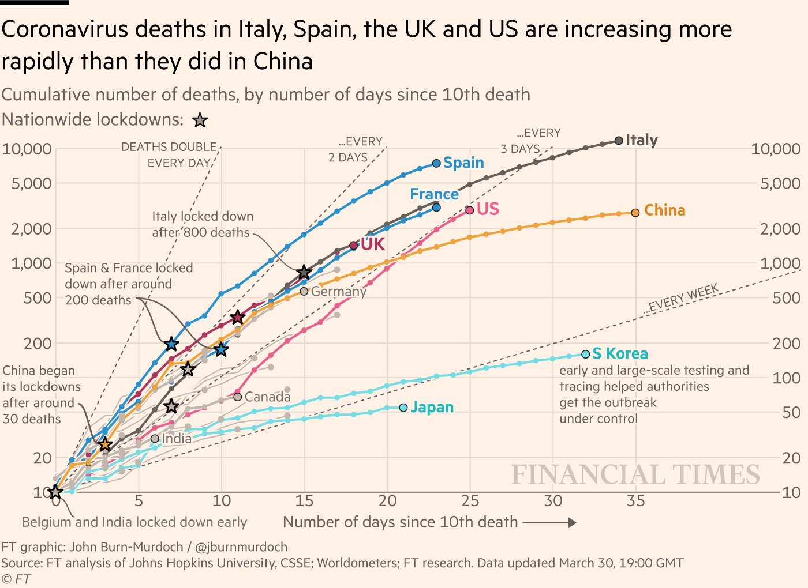

8 Fri Sept 25: Exponential growth (continuous time)
DUE DATE: Tues Oct 6
8.1 Required reading
Vandermeer, J.H., Goldberg, D.E., 2013. Population Ecology: First Principles (Second Edition). Princeton University Press, Princeton, United States. p4-8. Link
We now have two ways of describing how population size changes with time whereby each individual has the same average number of offspring per unit time and the same probability of dying.
- Discrete time geometric growth:
and,
- Continuous time exponential growth:
Notably, for both these models the per capita birth and death rates do not change change over time, and do not change with density or age.
The notation \(N_t\) and \(N(t)\) is conventional for discrete time versus continuous time formulations respectively, however, these notations both mean the same: the population size at a particular time, \(t\). When \(t=0\) we have the population size at time 0: \(N_0\) or \(N(0)\).
8.2 Discrete or continuous time formulations
Whether it is appropriate to model a population in a discrete time or continous time formulation depends on whether births and deaths are overlapping or neatly partitioned into a distinct time period. For example, for many animals there is a distinct breeding season: a short proportion of the year when offspring are born. As such, there is very little temporal overlap between the times of year when births and deaths occur. Humans are an example of a species that might reasonably be modelled as continuous time because babies are born year round.
8.3 Questions
Please submit the answer to these questions to brightspace, ideally for the next class, but you have until Sept 30 to complete them without penalty.
- In equation (8.2), what is \(e\)? [1 mark]
- For what values of \(r\) does the population size increase over time? [1 mark]
- As described in the reading, \(b\) is a per capita birth rate, and \(d\) is a per capita death rate. For continuous time exponential growth, both \(b\) and \(d\) must be non-negative and can take values bigger than 1. Note that this differs from the discrete time model formulation where \(0 \leq d \leq 1\). When \(d > 1\) in the continuous time formulation, this means that the average lifespan is less than one time step. For example, when \(d = 2\) this means that the average life expectancy for an individual is 1/2 a time step (i.e., days or year, however, the time unit is defined in the model). When the population size increases over time, what is true of \(b\) relative to \(d\)? [1 mark]
- For what value of \(r\) does \(N(t)\) not change over time? Hint: if \(N(t)\) is not changing then \(N(t)=N(0)\) for all \(t\). [1 mark]
Consider the equation: \[ \frac{dN(t)}{dt} = rN(t). \] As described in the reading, this is an alternative way to write the continuous time exponential growth equation. The quantity \(\frac{dN(t)}{dt}\) can be understood as the slope of a graph where population size is on the vertical axis and time is on the horizontal axis. As such, if the slope is zero, \(\frac{dN(t)}{dt}=0\), then the population size is not changing. If \(\frac{dN(t)}{dt}<0\), then the population size is decreasing. For what value of \(r\) does the population size decrease? What is true about \(b\) relative to \(d\) in this instance? [2 marks]
Which population would be more appropriate to be modelled as a continuous time formulation: E. coli bacteria or moose? [1 mark]
Calculate the formula for the doubling time for continuous time exponential growth (equation (8.2)). This is the time for the population to double in size. The value of \(N(0)\), the population size at \(t=0\) doesn't matter as long as it is a positive number. When the population has doubled, \(N(t) = 2N(0)\). To answer this question you need to find \(t\) such that \(N(t) = 2N(0)\). You may need to revisit some rules about working with logarithms to complete this question (i.e. see here, specifically the Product, Quotient, Power, and Root table. Also recall, \(Ln(e^x) = x\)). Please show your work. [2 marks]
- Consider the following plot:

Figure 8.1: An example of a very well thought out data visualation where the data might demonstrate exponential growth
In this question, we will find the equation for 'doubles every day'. Our model is equation (8.2). This means that we will calculate the equation for 'doubles every day' under the assumption that cumulative COVID-19 deaths grow exponentially over time.
To begin, we choose the time step for our model as days. The first problem we should consider is what is the value of \(r\) if the population doubles every 1 day? Make the appropriate substitutions and re-arrange equation (8.2) to find the value of \(r\).
Now, note that the y-axis on the above graph is on a logarithmic scale. We will assume this is a base \(e\) logarithmic scale. Take the natural logarithm of both sides of equation (8.2). Note that the result should be the formula for a straight line, i.e., \(y = mx + c\), but where \(y\) is \(Ln(N(t))\) and \(x\) is \(t\) (to match the axes of Figure 8.1). The questions we are left to solve are: what is the slope of the line (i.e., \(m\), or the value of the coefficient that multiplies \(t\)), and what is the value of the intercept (i.e., \(c\) or the remaining terms on the opposite side of the equals to \(Ln(N(t))\) and which are not multiplied by \(t\))?
Show all your work. Your answer is complete when you provide the numerical values of the slope and the intercept for the straight line corresponding to a doubling time of 1 day. Assume \(N(0)=10\). Your answers must be numbers - you will need to substitute the value of \(r\) that you calculated in the early part of this question. [2 marks]
- Provide the values of the slope and the intercept for doubling times of 2, 3, and 7 days. Again assume \(N(0)=10\). You do not need to show your work. [2 marks]